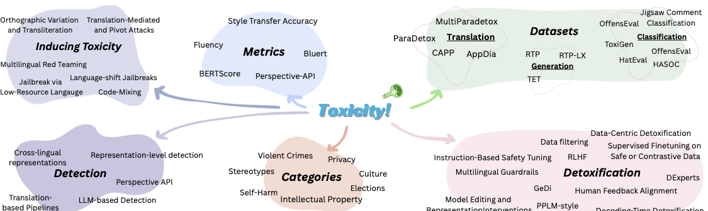

Threat Models
Language-shift, translation-mediated, code-switching, red-teaming, and post-deployment adaptation attacks.
Findings of ACL 2026
A survey of multilingual toxicity detection and detoxification for LLMs, organized around threat models, task setups, detection methods, mitigation strategies, and open evaluation challenges.
Abstract
Large language models (LLMs) are increasingly deployed across languages, but their safety behavior remains uneven across linguistic and cultural contexts. This survey synthesizes work on toxicity detection and detoxification for multilingual LLMs. We first catalogue threat models that exploit language choice, translation pivots, code-switching, orthographic variation, multi-turn interaction, and post-deployment fine-tuning to weaken safety alignment. We then organize task formulations, multilingual detection approaches, and mitigation strategies spanning data filtering, supervised and preference-based tuning, decoding-time steering, representation editing, and multilingual guardrails. Across these areas, we identify persistent challenges: uneven language coverage, culturally contingent definitions of harm, fragmented evaluation protocols, and the risk that detoxification suppresses legitimate dialectal or identity-related expression.
Paper Map
Language-shift, translation-mediated, code-switching, red-teaming, and post-deployment adaptation attacks.
Toxic-to-neutral rewriting, toxic text detection, toxic-generation evaluation, and preservation metrics.
Multilingual transformers, translation pipelines, representation-level probes, and LLM-based detectors.
Data filtering, supervised and preference tuning, decoding-time steering, representation editing, and guardrails.
Cross-lingual gaps, cultural misalignment, fragmented evaluation, over-suppression, and code-switching.
Taxonomy

Takeaways
Safety methods that work in English can underperform in low-resource, morphologically rich, or culturally distant settings.
Benchmarks need to move beyond translated prompts and include community-aware definitions of harm.
Mitigation should measure toxicity reduction alongside preservation of meaning, style, dialect, and identity-related speech.
References